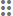

Home is displayed after you log in to myCority. This is the launch point for all of your myCority tasks and activities. The Home view is divided into two sections: Create New and My Tasks - Filters.
Create New
The Create New section has tiles for creating new records, such as:
New Questionnaire
New Sample
New Appointment
New Event Report
New Change Request
New Absence Report
New Vaccination
New Waste Record
New Waste Manifest
New Waste Container
New Chemical
For instructions on how to create a new questionnaire, sample, appointment, change request, or absence report see My Tasks. For instructions on how to create a new event report, see Creating a New Event Report.
My Tasks - Filters
The My Tasks - Filters section displays tiles for accessing your assigned tasks, such as:
Questionnaires displays any questionnaires that have been assigned to you to complete. For medical questionnaires, the Started On date will remain blank until you start working on it.
Inspections records can come from the Safety, Environmental, or Ergonomics clouds. Click and inspection to open it. If a question has an image attached to it, it will display in an enlarged form.
Surveys displays any surveys that have been assigned to you to complete.
Metrics displays individual metrics that have been assigned to you to complete.
Actions displays actions that are assigned to you to complete.
Campaigns displays campaign metrics that have been assigned to you to complete.
Investigations displays incident investigations where you are one of the investigators.
Appointments displays your scheduled medical appointments.
Samples displays any samples that have been assigned to you to complete.
Observations displays any observations that have been assigned to you to complete.
My Dashboards displays the dashboards that have been shared with you.
Event Reports displays any event reports that have been assigned to you to complete.
My Records displays your medical records.
Scan Code allows you to scan or search for a code to locate an environmental asset.
Offline displays any records that were created offline and have not yet been submitted.
Change Request displays any management of change records that have been assigned to you to complete.
Waste Records displays any waste records that have been assigned to you to complete.
Waste Manifest displays any waste manifests that have been assigned to you to complete.
Waste Containers displays any waste container records that have been assigned to you to complete.
Chemicals displays any chemical records that have been assigned to you to complete.
The gray number indicator on a tile displays the number of incomplete records for that task type. For the Offline icon, the grey number indicator displays the number of records that were created offline and have not yet been submitted.
If you click a tile, you will be directed to the My Tasks view (or the Event Reports view, if you click the Event Reports tile). The view will be filtered according to your selection.
Customize Your Tiles
Your administrator controls which tiles you see, but you can rearrange their order. For example, you may want to arrange tiles from most to least used, or in the order of a frequently used daily workflow.
Each tile has a "handle"

; click the handle and drag a tile around to change its order within the pane. When you drop a tile in a new location, the other tiles around it will move to adjust for it.
Note Tiles can be rearranged while using any supported hardware platform, but because this is something you are not likely to do often, we recommend using a desktop for ease of seeing the entire pane. Once the tile order is set, it will be retained when logging in to any supported hardware. Your layout could be affected if the administrator later adds or removes your access to a tile, so you may need to "tweak" your desired order at times.